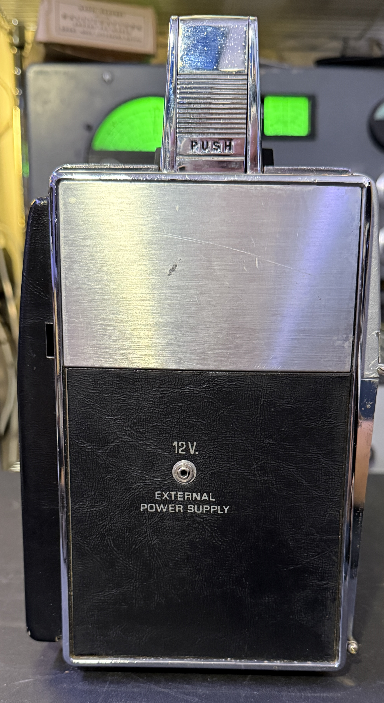
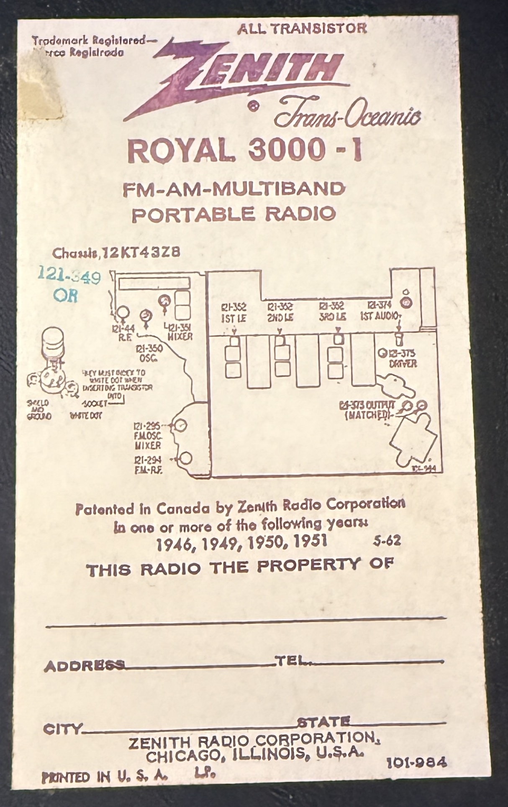
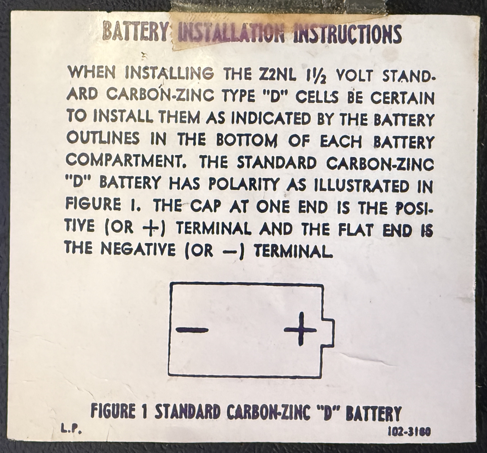

Zenith Royal 3000
Years of Production: 1963 - 1969
The Zenith Royal 3000 was one of the first portable radios to feature shortwave bands, making it a popular choice for radio enthusiasts and travelers. It was a successor to the Zenith Royal 1000 and introduced several improvements in design and functionality.
Technical Specifications:
- Frequency Coverage: AM, FM, and 7 Shortwave Bands
- Power Source: 9 D-cell batteries
- Transistor Count: 12 transistors
- Dimensions: 12.5 x 8.5 x 4.5 inches
- Weight: Approximately 10 pounds (with batteries)
Notable Features:
- High-quality sound with excellent sensitivity and selectivity
- Durable metal and plastic construction
- Telescoping antenna for improved shortwave reception
- Rotating drum dial for easy band selection
- Elegant design with a chrome front panel
Historical Context:
The Zenith Royal 3000 was introduced during the golden age of transistor radios. It was a premium product aimed at discerning customers who valued performance and reliability. The inclusion of FM and shortwave bands made it versatile and ahead of its time. It remains a sought-after collector's item due to its historical significance and robust build quality.
Additional Details:
The Royal 3000 was often used by travelers, journalists, and hobbyists who needed a reliable radio for international broadcasts. Its design and engineering set a benchmark for portable radios of the era.
N4IXTs Zenith Royal 3000 Other Images

Front lid open revealing the time zone guide and log book.

Closer view of the time zone guide.

Side view of the knob that changes the band. It rotates the drum visible through the faceplate and changes what frequency band is being listened to.

Side view with the plug for an external 12v power supply.

Back cover of the Royal 3000

Inside view of the radio.

Labels fixed to the inside of the rear case cover.

Chassis label.

Battery installation instructions.